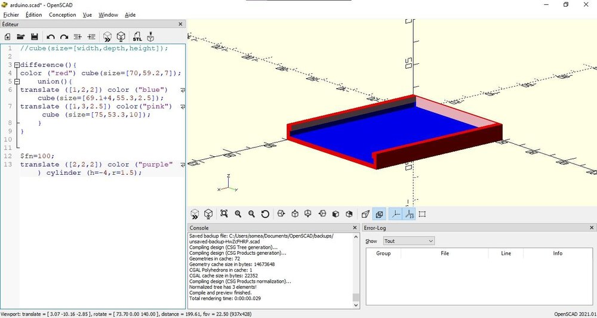
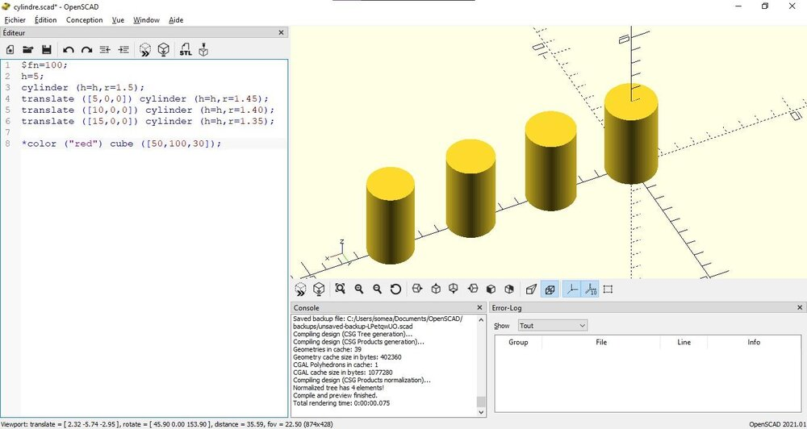
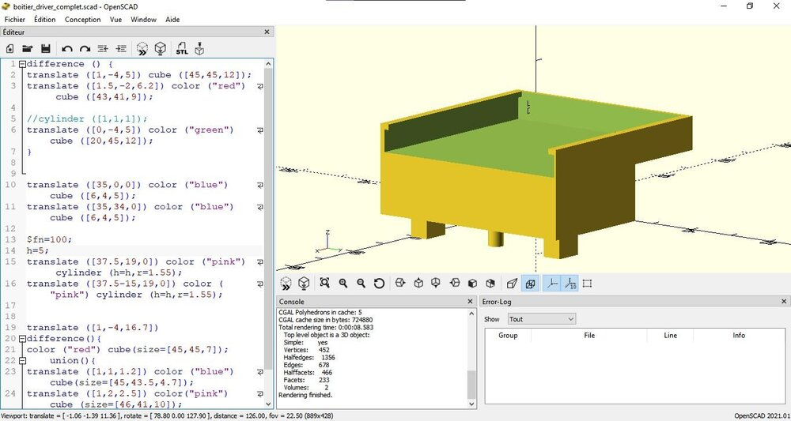
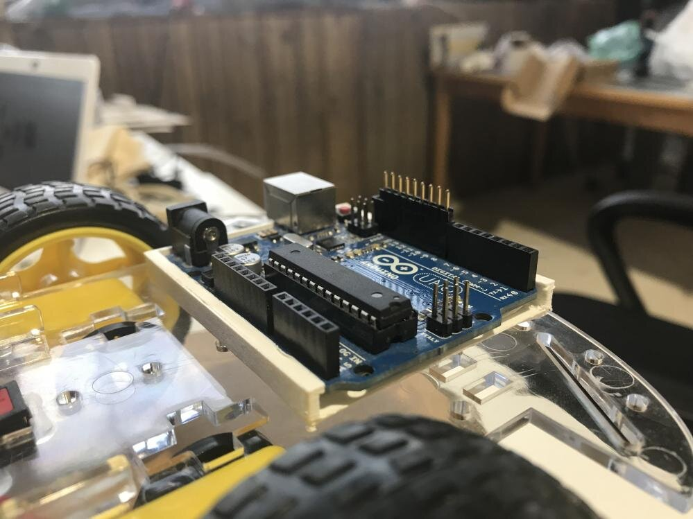
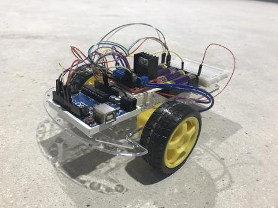
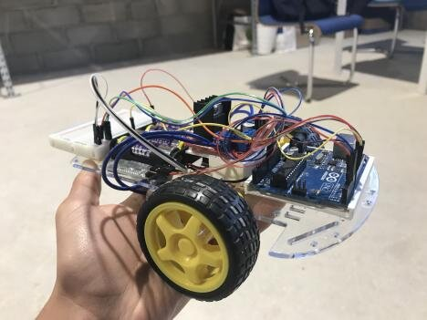
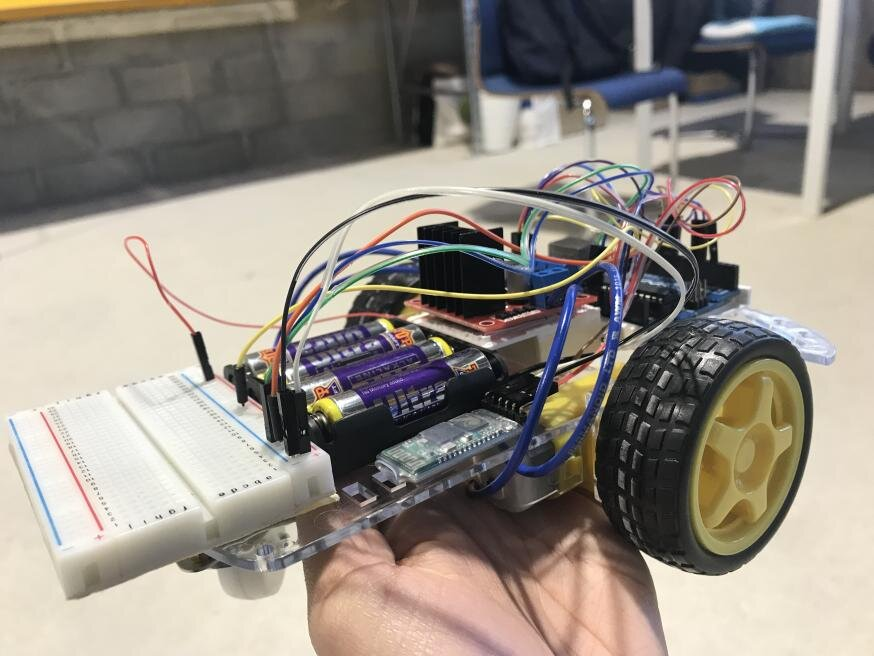

Stage de 3e · Du 13 au 17 décembre 2021 · Terminé
Un robot en cinq jours chez Pixel Robotics
Pour mon stage de 3e, Nizar Ouarti, fondateur de la start-up de robotique Pixel Robotics, m'a donné une carte Arduino Uno, une base de robot et un objectif : piloter le robot depuis mon smartphone. Le reste, je devais le modéliser, l'imprimer, le câbler et le programmer moi-même.
Le point de départ
Pixel Robotics est une très petite entreprise technologique créée en 2020, qui fabrique des robots et un scanner 3D. J'avais trouvé ce stage en listant toutes les entreprises de robotique de Paris et d'Île-de-France et en rédigeant mon premier CV. Je n'avais encore jamais fait de modélisation 3D.
Jour par jour
- Lundi
Premier programme Arduino : faire clignoter une LED (le « Blink »). Puis installation d'OpenSCAD et modélisation d'un boîtier pour fixer la carte sur le robot.
- Mardi
Modélisation des pieds du boîtier. Pour trouver le bon ajustement, j'ai imprimé 4 cylindres de test, avec 0,1 mm de diamètre d'écart entre chacun. Export en
.stl, lancement de l'impression, puis début du code des moteurs. - Mercredi
Le boîtier est imprimé : nettoyage, montage sur le robot avec la carte. J'ai dessiné le plan de câblage, puis commencé le boîtier du driver qui commande les moteurs.
- Jeudi
Fin de la modélisation du boîtier du driver, et suite du code moteur.
- Vendredi
Câblage d'une quinzaine de fils, premier test : les moteurs tournent. Ensuite le code pour avancer, reculer et tourner, puis la réception des commandes en Bluetooth depuis le smartphone. Rangement des fils, vérification, test final.
Modéliser en 3D avec OpenSCAD
OpenSCAD ne se manipule pas à la souris : on décrit chaque pièce en code, avec des cubes et des cylindres que l'on place par coordonnées. C'est ce qui m'a le plus résisté au début, et ce que j'ai fini par comprendre en persévérant.




Le robot terminé
Une carte Arduino Uno qui reçoit les commandes en Bluetooth, un driver pour les deux moteurs et une plaque d'essai, le tout sur la base à deux roues. Depuis une application sur le smartphone, on le fait avancer, reculer et tourner à gauche ou à droite.



Premier test des moteurs en vidéo →
Le test final en vidéo →
Ce que j'en retiens
J'ai fait un robot de A à Z en une semaine : modélisation 3D, impression, soudure, câblage et code. J'ai aussi vu de près le métier d'ingénieur en robotique : analyser un problème, programmer, livrer du code et des rapports. C'est là que j'ai su que je voulais faire des études d'ingénieur.